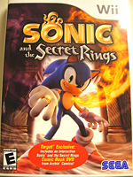
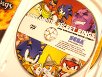
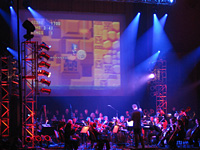
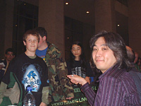
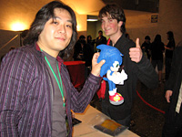
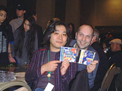

「スタジオＵＳＡ」現地の様子をレポート！
みなさんこんにちは！
スタジオUSA在勤の瀬上です。
日本でも発売になった『ひみリン』こと『ソニックと秘密のリング』だけど
皆は遊んでくれたかな？
ここアメリカでは『SONIC AND THE SECRET RINGS』というタイトルで日本よりもちょっと早く、2月に発売されていたんだよ。
意味合い的には同じなんだけれども、日本と海外で違うタイトルになるのはここ最近のソニックシリーズでは無かったことだよね。
でも、カタカナで『ソニック＆ザ・シークレット・リングス』と書かれるよりも『ソニックと秘密のリング』の方が何だかしっくりくるよね、うん。
さて、アメリカではゲームを買うといえば、ゲーム屋さん、おもちゃ屋さん、それに忘れてはいけないのが大型量販店！
前回の知育玩具も、大型量販店の一つでの様子を紹介したんだけど、衣類、文具や書籍、家電や玩具、それに生活雑貨や食品など、ありとあらゆるものを置いているこれらのお店は、今やCDやDVD、ゲームといったソフトウェアのセールスの中でも、かなりの割合を占めるところなんだ。
そういったこともあって、ここ何年か、アメリカのソフトウェアの市場では、その店舗限定パッケージというのが出てきているんだ。
例えば、CDだったらボーナストラックが入っていたりダウンロード出来たり、DVDの場合も、映像特典が入ったボーナスディスクが付いていたりするんだよ。
そして、今回紹介するのは『SONIC AND THE SECRET RINGS』の限定パッケージ！
"Sand, Sprits and Sonic Speed"というソニックのDVDコミックが付いているんだ。
これがディスクの盤面！
おお、確かに『SONIC AND THE SECRET RINGS』と書いてあるね！
今回、初めてDVDコミックというのを見たんだけれども、背景の絵の上に描かれているキャラクターがちょっと動いたり、クリックすることによってセリフが吹き出しで表示されたり、というもの。
もちろん本作をモチーフにしているだけあって、シャーラやイレイザー・ジンも出ていたよ。
全編を通じて、BGMが流れていたけど、音声によるセリフや効果音は無いみたい。
これから、こういったDVDコミックが出てくるらしいので、また機会があったら紹介するね！
 あ、そうそう、攻略本も紹介しようと思っていたんだ！
あ、そうそう、攻略本も紹介しようと思っていたんだ！
ちょっと前まではアメリカの攻略本は、割と薄めだったんだけれども、
昨年末にリリースされた『SONIC THE HEDGEHOG』や、
今回の『SONIC AND THE SECRET RINGS』のものは、かなり厚くて重いよ！
何せフルカラーだし、300ページ以上もあるんだ！
そのうち、「SONIC CHANNEL スタッフコラム」の中のどこかで中身を見せてくれるんじゃないかな？
 最後にもう一つ、サンフランシスコで開かれた「ビデオ・ゲームズ・ライブ！」 というイベントに行ってきたので紹介するね。

「ビデオ・ゲームズ・ライブ」の
仕掛け人、トミー・タラリコと
そう、第2回目のこのコーナーでも紹介したことがあったよね。
前に観たことがあっても、♪セーガー♪の合唱から始まるソニックのコーナーは
観ていて楽しくて、ワクワクだったよ。
今回は、終演後のミート＆グリートに出て欲しい、と主催者のトミーに言われていたので、参加してきたよ！

終演後、一段落した夜の11時過ぎから始まったサイン会は、一体いつ終わるの？
というくらいの長い列で、実際に終わったのは夜中の2時過ぎ！
会場で買い求めたパンフレットやポスターにサインをすることが多かったんだけど、
中にはソニックのゲームや、ぬいぐるみなどを持って来たソニックファンもいたよ！
ソニック好きな皆と色々と話せて楽しかったな！

「SONIC R」等を手掛けた
リチャード・ジャックスと
それと、今回はアメリカ版の『ソニックCD』の楽曲を担当したスペンサー・ニールセンや、
『ソニックR』などの楽曲も担当したリチャード・ジャックスとも
久しぶりに会えて嬉しかったんだ！
3人揃って写真を撮り損ねたのは残念だったけど、また顔を揃える機会があるといいな。
今回の「スタジオUSA通信」はここまで。
また次回も、アメリカならではの情報をお届けするのでお楽しみに！
 プロフィール：
プロフィール：
瀬上 純（せのうえ じゅん）
SEGAのサウンドクリエイター。
代表作は『ソニックアドベンチャー』シリーズ、
『ソニックヒーローズ』、『シャドウ・ザ・ヘッジホッグ』など。
最新作、『ソニックと暗黒の騎士』ではサウンドディレクターを務めた。
その他の参加作品には、『ナイツ ～星降る夜の物語～』、『プロ野球チームをつくろう！2』など。